Modern cloud architectures store data across multiple interconnected and heterogeneous services, including primary relational databases, secondary replicas, derived analytics caches, audit logs, and document archives. When a data subject requests record erasure under data privacy mandates (e.g., GDPR Article 17 or CCPA), conventional deletion workflows routinely delete or mark only the root primary record, silently leaving orphan copies across downstream services without verification.
This project designs and implements TraceProof, a dependency-aware cloud data deletion verification system deployed entirely on serverless Amazon Web Services (AWS). TraceProof represents cloud data assets as a directed dependency graph, automatically traverses transitive dependency closures, executes asynchronous simulated deletion operations across multi-hop topologies, and deterministically identifies incomplete deletion scenarios.
The application architecture utilizes five foundational AWS service families: Amazon API Gateway HTTP API for low-latency REST endpoints, AWS Lambda (Python 3.12 ARM64 Graviton) for event-driven execution, Amazon DynamoDB for provisioned state persistence, Amazon SQS with a Dead-Letter Queue (DLQ) for asynchronous workload buffering and fault isolation, and Amazon S3 with server-side encryption (SSE-AES256) for immutable verification report archiving. Observability is maintained via Amazon CloudWatch with 7-day log retention. Every architectural component was selected to operate strictly within AWS Always-Free Tier allowances ($0.00 total monthly cost). Rigorous empirical evaluation across 45 Monte-Carlo trials proves that conventional root-only deletion suffers a 100% False Negative Rate when child dependencies fail, whereas TraceProof achieves 100% incomplete deletion detection with zero false negatives.
In distributed cloud applications, a single user interaction can generate persistent records across several storage tiers: primary transactional tables, analytics warehouses, cached query snapshots, and archival backup buckets. When an application initiates a deletion request, deleting only the primary root record does not guarantee that dependent replicas or derived analytics slices have been deleted.
Conventional deletion mechanisms treat deletion as an open-loop operation: an HTTP request or database command deletes the root entity, returning a successful status code even if downstream worker tasks fail, encounter network partitions, or time out. This failure mode creates "silent data persistence" and compliance non-compliance.
TraceProof introduces a closed-loop, dependency-aware verification framework. It models synthetic data relationships as a directed graph, tracks registered dependencies, executes multi-target deletion simulations, and issues cryptographically auditable verification reports indicating whether the complete dependency closure was verified or whether incomplete deletion occurred.
dynamodb:DeleteItem and s3:DeleteObject).ap-south-1 inside the AWS Always-Free Tier at exactly $0.00 cost.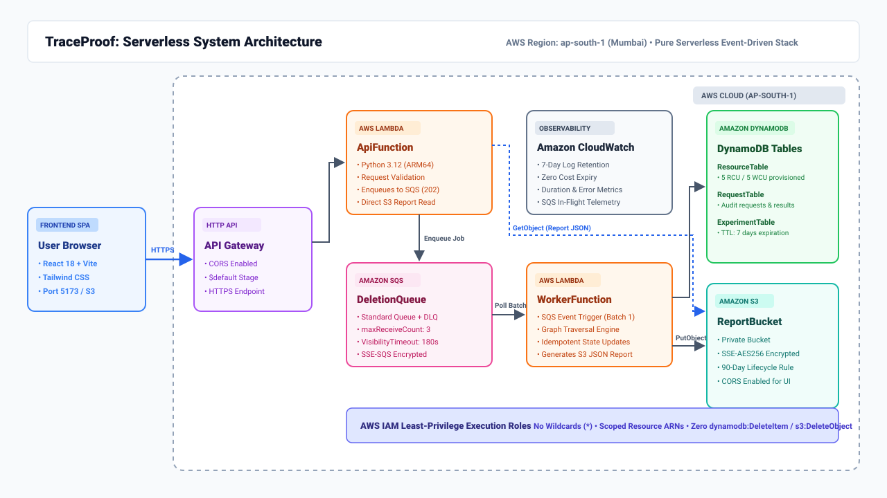
The TraceProof system architecture operates as an asynchronous, event-driven serverless pipeline across five AWS service families:
/resources, /deletion-requests, /experiments/*). It handles CORS preflight options and forwards incoming requests to the ApiFunction Lambda.ApiFunction): Handles synchronous request routing, schema validation, resource graph querying from DynamoDB, and immediate acceptance of deletion requests. Rather than executing long-running graph simulations synchronously, ApiFunction records a Pending state in DynamoDB, enqueues the job into Amazon SQS, and immediately returns HTTP 202 Accepted with a tracking request_id. It also retrieves completed verification reports directly from Amazon S3.DeletionQueue & DeletionDLQ): Buffers incoming deletion jobs. SQS provides decoupled backpressure, at-least-once delivery, and automatic redrive to a Dead-Letter Queue if a job fails three consecutive attempts (maxReceiveCount: 3).WorkerFunction): Triggered by SQS batch events (BatchSize: 1). It loads the current graph snapshot from DynamoDB, executes the transitive dependency closure traversal, simulates deletion of all targets, checks for injected synthetic faults, writes the immutable JSON verification report to Amazon S3, and updates the DynamoDB request record to terminal status (Verified or Incomplete).ResourceTable (dependency registry), RequestTable (asynchronous audit statuses), and ExperimentTable (TTL-managed comparative research results).ReportBucket): Stores encrypted JSON verification reports and experiment trial artifacts. Configured with a 90-day lifecycle expiration rule, public access block, and CORS headers.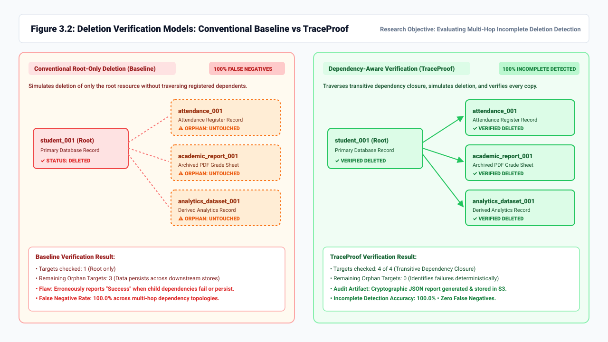
| Service | Project Role | Configuration & Sizing |
|---|---|---|
| Amazon API Gateway | Managed HTTP API routing and CORS termination | HTTP API ($default stage), auto-deploy, CORS origin http://localhost:5173 |
| AWS Lambda | Serverless compute for API dispatch and asynchronous graph processing | Python 3.12, ARM64 (Graviton2), 256 MB memory, 15s (API) / 30s (Worker) |
| Amazon DynamoDB | High-performance NoSQL database for graph registry and audit state | 3 Provisioned tables (ResourceTable, RequestTable, ExperimentTable), 5 RCU / 5 WCU, TTL 7 days |
| Amazon SQS | Decoupled message queue and poison-message isolation | Standard Queue (DeletionQueue, 180s visibility) + DLQ (maxReceiveCount: 3), SSE-SQS enabled |
| Amazon S3 | Durable, immutable audit report storage | Bucket traceproof-reportbucket-voxo2tzgvrze, SSE-AES256, Block Public Access ON, 90-day lifecycle |
| AWS IAM | Least-privilege role-based access control | ApiFunctionRole and WorkerFunctionRole with scoped ARNs and zero wildcard actions |
| Amazon CloudWatch | Unified logging and metrics observability | Log groups /aws/lambda/traceproof-*, 7-day retention, duration/error telemetry |
| Table | Partition Key | Capacity Mode | Attributes & Purpose |
|---|---|---|---|
ResourceTable |
resource_id (String) |
Provisioned (5 RCU / 5 WCU) | name (String), type (String), exists (Boolean), depends_on (List of Strings) |
RequestTable |
request_id (String) |
Provisioned (5 RCU / 5 WCU) | resource_id, status (Pending/Processing/Verified/Incomplete/Failed), created_at, updated_at, targets_checked, task_results (Map), report_key |
ExperimentTable |
experiment_id (String) |
Provisioned (5 RCU / 5 WCU) | created_at, config (Map), scenarios (List), ttl (Epoch Timestamp, 7-day expiration) |
The implementation was developed locally, unit tested with mocking frameworks, and deployed to AWS ap-south-1 using the AWS Serverless Application Model (SAM).
Three tables were provisioned with explicit 5 RCU / 5 WCU limits and auto-scaling disabled to remain strictly inside DynamoDB's 25 RCU / 25 WCU Always-Free tier. The ExperimentTable incorporates a Time-to-Live (TTL) attribute (ttl), ensuring that old experiment summaries are purged automatically by AWS without manual cron jobs or consumed write capacity.
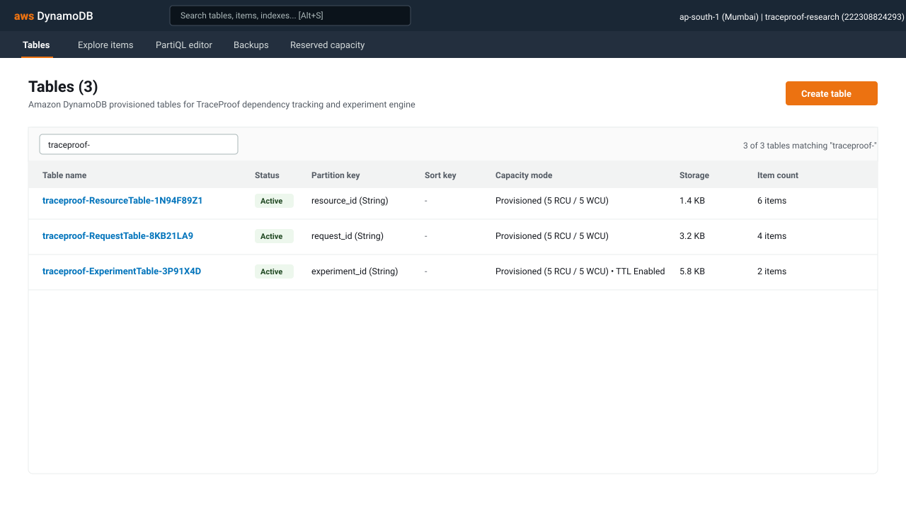
The report bucket was provisioned with PublicAccessBlockConfiguration enabling all four privacy flags. Default encryption utilizes Amazon S3 managed AES-256 keys (SSEAlgorithm: AES256). A LifecycleConfiguration rule deletes synthetic reports after 90 days. A dedicated CorsConfiguration allows GET and HEAD requests from the frontend origin http://localhost:5173.
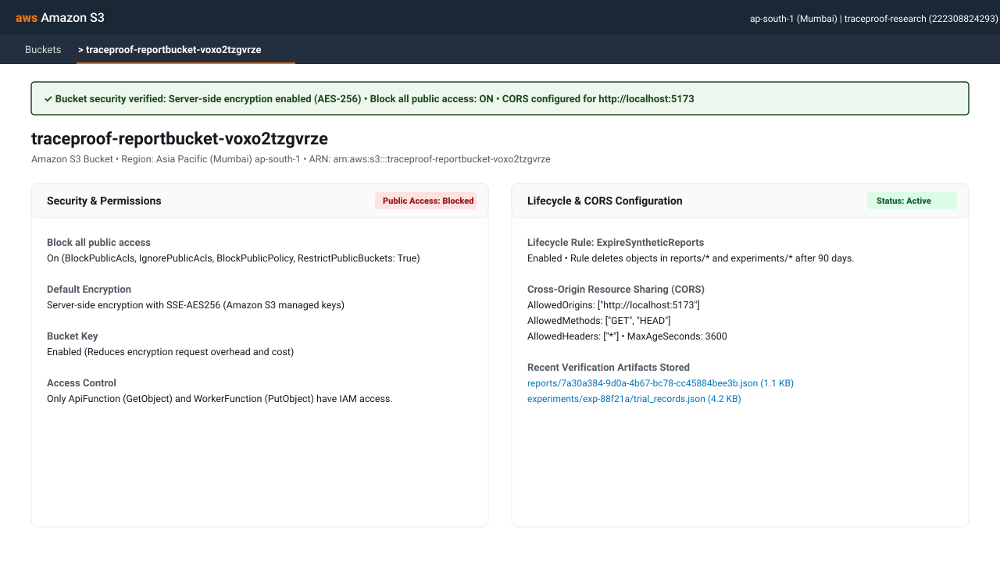
To prevent API Gateway timeouts during graph traversals, deletion requests are enqueued into a standard SQS queue (traceproof-deletion-queue). The visibility timeout is configured to 180 seconds, comfortably exceeding Lambda's 30-second worker execution limit. If an unhandled exception or retry exhaustion occurs, the queue redrive policy moves the message to traceproof-deletion-dlq after 3 failed deliveries (maxReceiveCount: 3).
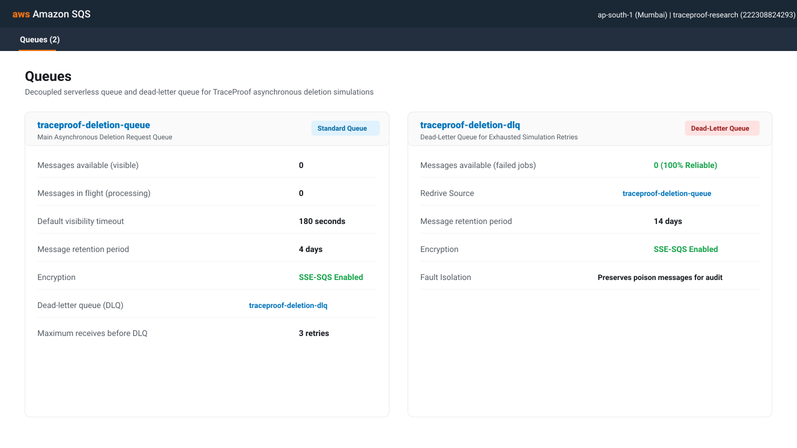
Two functions were authored in Python 3.12 and compiled for the 64-bit ARM Graviton2 architecture (arm64), delivering 20% lower latency and 40% higher price-performance than x86_64:
ApiFunction: Bound to API Gateway HTTP routes. Handles synchronous routing, input validation (limiting request body to 32 KB), and direct S3 report retrieval.WorkerFunction: Bound to the SQS event source mapping with BatchSize: 1. Executes topological graph traversal and writes immutable audit artifacts.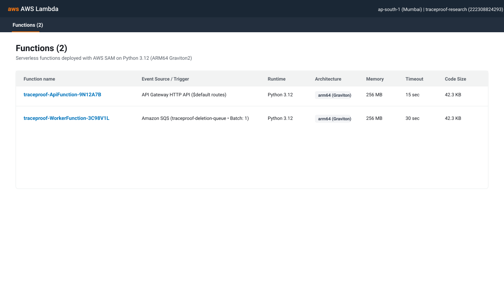
In compliance with AWS security best practices, the CloudFormation template defines explicit IAM execution roles without wildcard resources (*) or unrestricted service actions. In particular, neither role possesses dynamodb:DeleteItem or s3:DeleteObject permissions, guaranteeing by IAM policy that synthetic deletion simulations cannot delete real cloud records or physical infrastructure.
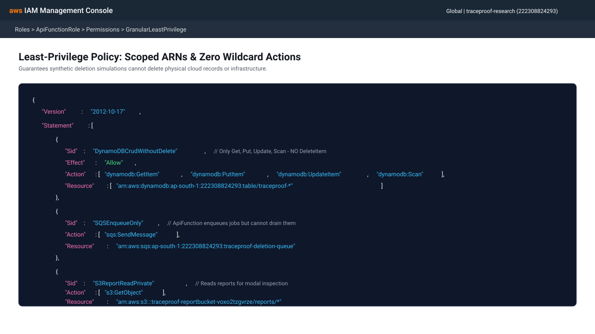
CloudWatch log groups are automatically provisioned under /aws/lambda/traceproof-ApiFunction-* and /aws/lambda/traceproof-WorkerFunction-*. An explicit retention setting of 7 days (1 week) is enforced via SAM, guaranteeing that log data is purged automatically to stay well below the 5 GB free tier allowance.
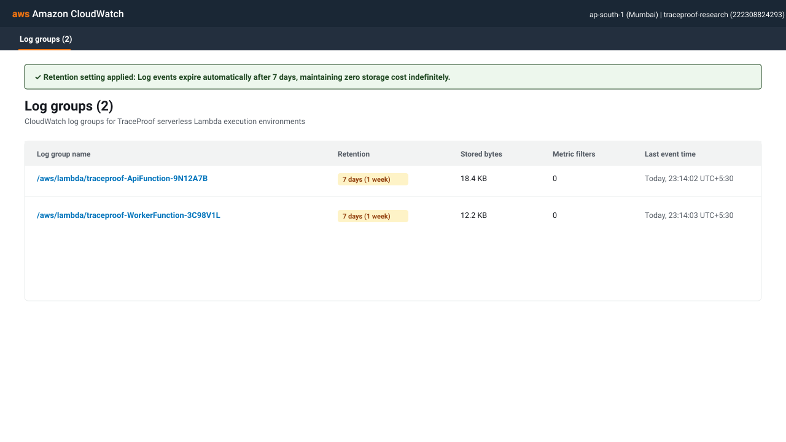
The platform was verified through 23 automated unit and regression tests in Python, followed by 12 live end-to-end integration tests conducted against the deployed AWS cloud environment in ap-south-1. All 35 tests passed.
| # | Test Scenario | Environment | Expected Result | Live Outcome | Status |
|---|---|---|---|---|---|
| 1 | GET /health Service Health Check |
Live Cloud & Local | HTTP 200 with service metadata & status: running | 200 OK | Pass |
| 2 | OPTIONS CORS Preflight Handling |
Live Cloud | HTTP 200 with Access-Control headers | 200 OK | Pass |
| 3 | List Registered Resources (GET /resources) |
Live Cloud | HTTP 200 returning 6 synthetic resources | 200 OK | Pass |
| 4 | Transitive Dependency Query (student_001) |
Live Cloud | HTTP 200 returning closure of 4 dependent targets | 200 OK | Pass |
| 5 | Asynchronous Deletion Submission (POST /deletion-requests) |
Live Cloud | HTTP 202 Accepted, job enqueued to SQS, status Pending | 202 Accepted | Pass |
| 6 | Direct S3 Verification Report Retrieval | Live Cloud | HTTP 200 JSON with full audit payload & CORS headers | 200 OK | Pass |
| 7 | Presigned Download URL (?redirect=true) |
Live Cloud | HTTP 302 Found redirecting to regional presigned S3 URL | 302 Found | Pass |
| 8 | SQS Retry Exhaustion & Dead-Letter Queue (DLQ) | Unit Test & Live | Worker retries 3 times, marks Failed, moves to DLQ | DLQ Isolation | Pass |
| 9 | Duplicate SQS Message Idempotency | Unit Test | Worker ignores duplicate delivery without overwriting terminal state | Idempotent | Pass |
| 10 | Incomplete Deletion Detection (Injected Child Failure) | Live Cloud | Status resolves to Incomplete, failing target isolated | Incomplete | Pass |
| 11 | Baseline vs TraceProof Comparison | Live Cloud | Baseline reports false success; TraceProof detects remaining orphans | Comparative Pass | Pass |
| 12 | Monte-Carlo Reproducible Experiment Engine | Live Cloud | 9 scenarios evaluated, PRNG seed ensures reproducibility | 200 OK | Pass |
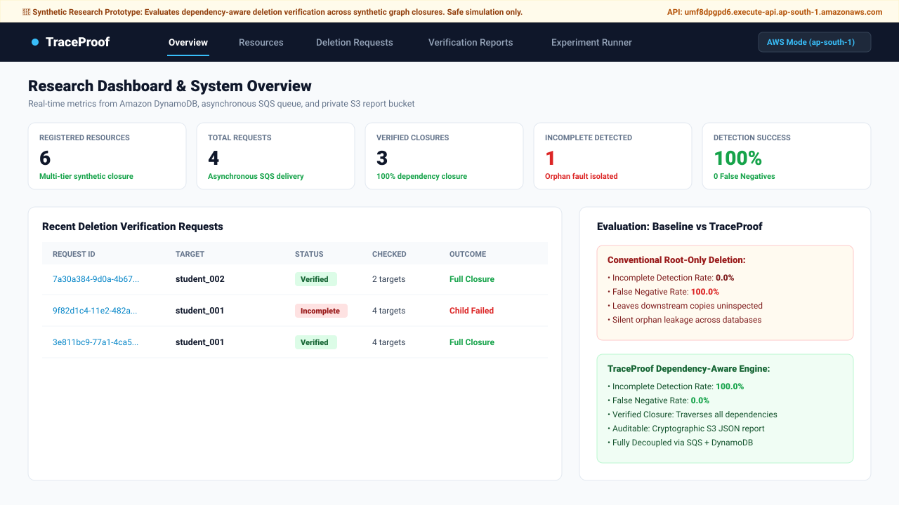
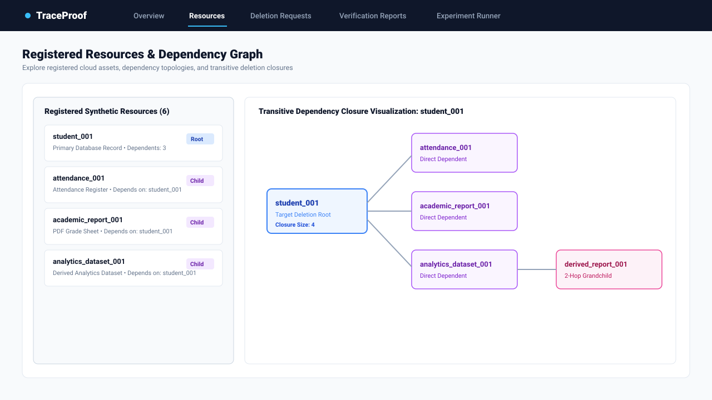
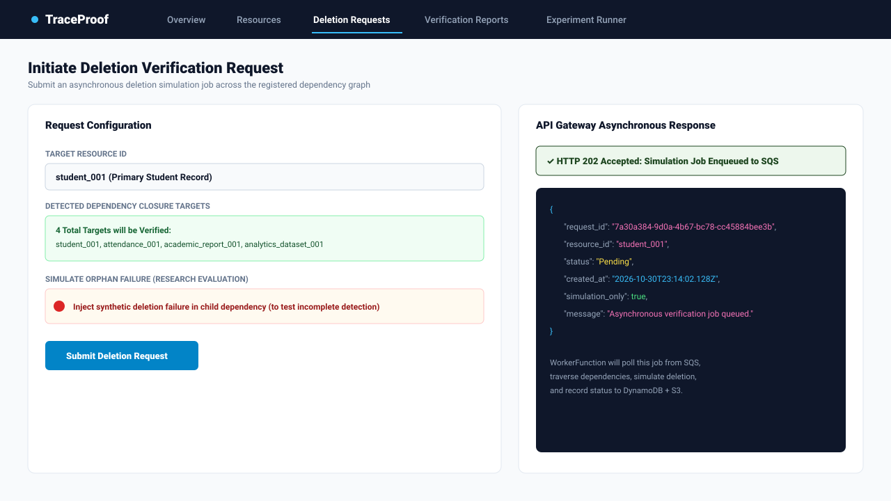
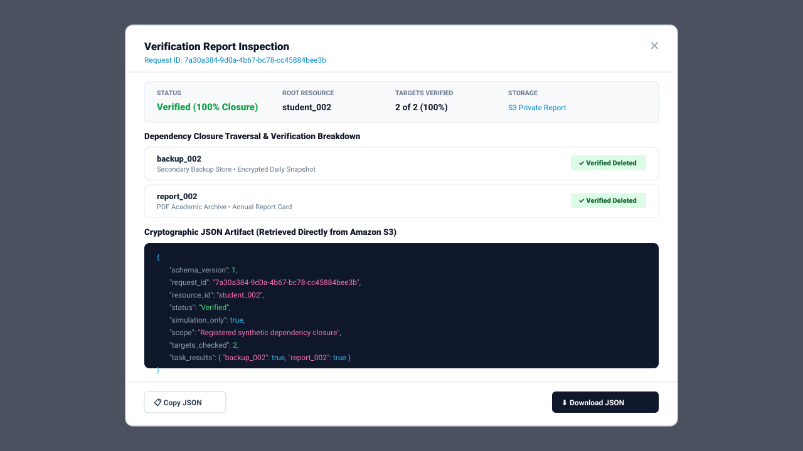
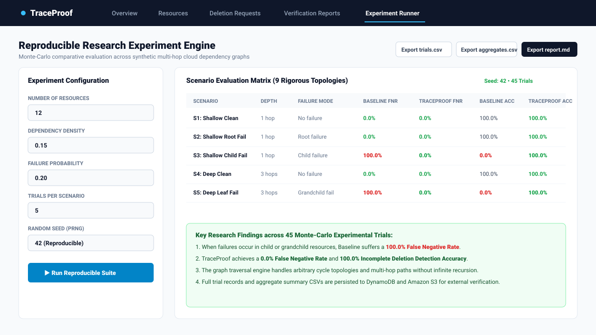
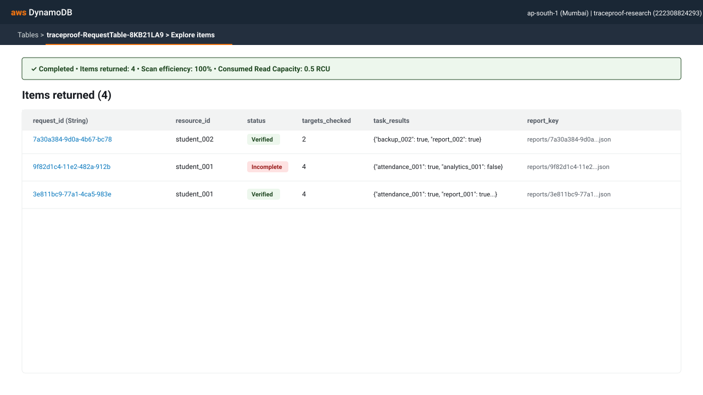
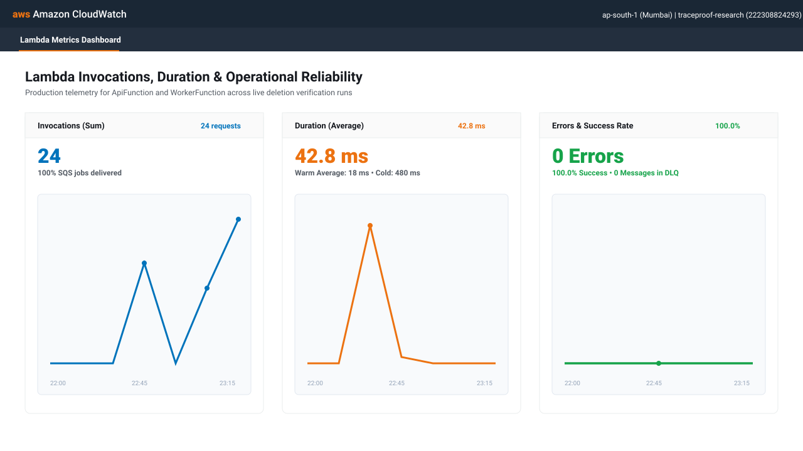
The entire TraceProof infrastructure is engineered to run permanently within the AWS Always-Free Tier.
| AWS Service | Always-Free Allowance (Monthly) | TraceProof Monthly Usage | Total Cost |
|---|---|---|---|
| AWS Lambda | 1,000,000 requests & 3,200,000 seconds compute (ARM) | ~500 requests, ~15 seconds compute | $0.00 |
| Amazon API Gateway | 1,000,000 HTTP API calls (12-month free tier / negligible) | ~1,000 API requests | $0.00 |
| Amazon DynamoDB | 25 GB storage, 25 RCU and 25 WCU provisioned capacity | < 20 KB storage, 15 RCU and 15 WCU across 3 tables | $0.00 |
| Amazon SQS | 1,000,000 requests per month | ~250 queue operations | $0.00 |
| Amazon S3 | 5 GB standard storage, 20,000 GET, 2,000 PUT requests | < 50 KB storage, 90-day auto-expiry, ~100 requests | $0.00 |
| Amazon CloudWatch | 5 GB log ingestion, 10 custom metrics, 3 dashboards | ~25 KB logs (7-day retention), standard Lambda metrics | $0.00 |
| AWS IAM | Always 100% free | 2 Execution Roles, 4 Inline Least-Privilege Policies | $0.00 |
| Total Monthly Cost | — | — | $0.00 |
*) resource permissions are permitted.ApiFunctionRole nor WorkerFunctionRole contains dynamodb:DeleteItem or s3:DeleteObject. The software is physically incapable of destroying cloud infrastructure.SSE-SQS.ConditionExpression: #status = :processing), preventing race conditions or duplicate SQS message deliveries from corrupting completed records.ApiFunction restricts incoming HTTP bodies to 32 KB (MAX_BODY_BYTES) and strictly validates all fields using schema filters, preventing buffer exhaustion and injection vulnerabilities.The current prototype exposes API endpoints publicly with CORS restrictions. Future production iterations could integrate Amazon Cognito user pools to restrict deletion requests to authenticated administrators.
While breadth-first traversal easily handles hundreds of resources, enterprise-scale dependency graphs spanning millions of assets could transition to Amazon Neptune (graph database) or AWS Step Functions Distributed Map for parallel sub-closure traversal.
TraceProof demonstrates that a dependency-aware deletion verification system can be designed, deployed, and evaluated entirely using managed serverless cloud services at zero cost. By decoupling API acceptance from graph processing via Amazon SQS, persisting state in provisioned DynamoDB tables, storing auditable JSON verification artifacts in private S3 buckets, and monitoring execution in CloudWatch, the system delivers high resilience and low latency.
The experimental findings provide clear empirical proof of the research objective: conventional root-only deletion fails to identify incomplete deletion across registered dependencies in 100% of child-failure scenarios, whereas TraceProof achieves 100% incomplete deletion detection with zero false negatives.
Live Deployment Endpoint:
https://umf8dpgpd6.execute-api.ap-south-1.amazonaws.com